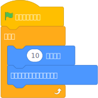

Scratch3風のJavascript
Scratch3LikeJS
Scratch3LikeJSを使うと、こんな感じで、Scratch3 のブロックに対応した Javascriptコードを書くことができます。

P.sprite.whenFlag( function() {
for(;;) {
// (10)歩動かす
this.moveSteps( 10 );
// もし端に着いたら、跳ね返る
this.ifOnEdgeBounds();
}
});
P って何？
Scratch3LikeJS の Process のインスタンスです。 P を使って ScratchLikeJS のいろいろな便利なメソッドを使うことができます。
Scratch3LikeJS Javascriptの書き方
preload処理
画像や音をロードするところです。
P.preload = function() {
// 画像をロードします
this.loadImage( 画像ファイルのパス , '名前');
// サウンドをロードします
this.loadSound( 音ファイルのパス , '名前' );
}
preloadの中に書いた全ての loadImage, loadSound のロード処理が終われば、次の prepare処理に進みます。
ロードするものがないときは、preload処理を省略（記述しない）してもオーケーです。
prepare処理
ステージ(Stage)やスプライト(Sprite)を作るところです。
P.prepare = function() {
// ステージのインスタンスを作ります
P.stage = new P.Stage("stage");
// ステージへ背景を追加します
P.stage.addImage( P.images.Jurassic );
// スプライトを作ります。Cat という名前を付けて、P.cat 変数へ格納します。
P.cat = new P.Sprite("Cat");
// スプライトへコスチュームを追加します
P.cat.addImage( P.images.Cat );
}
setting処理
「旗をクリックしたとき」や「クリックされたとき」のようなイベントとそれにともなうスクリプトを定義します。
P.setting = function() {
// 「ステージ」旗がクリックされたときのイベント
P.stage.whenFlag(async function() {
// ステージへ音を登録します。
// ボリューム( 50 )を一緒に設定しています。
this.addSound( P.sounds.Chill, { 'volume' : 50 } );
});
// 「ステージ」旗がクリックされたときのイベント
P.stage.whenFlag(async function() {
// ずっと繰り返して、「音」を鳴らします。
// 音は 終わるまで鳴らします(Until Done)
for(;;) {
await this.startSoundUntilDone();
}
});
// 「ネコスプライト」旗がクリックされたときのイベント
P.cat.whenFlag( async function() {
// 「ネコスプライト」へ音を登録します
// ボリューム( 20 )を一緒に設定しています。
this.addSound( P.sounds.Mya, { 'volume' : 20 } );
});
// 「ネコスプライト」旗がクリックされたときのイベント
P.cat.whenFlag( async function() {
// 向きの変化量
const direction = 1;
// ずっと向きを変え続けます。
for(;;) {
// 決めた量を足し続けます。
this.direction += direction;
}
});
}